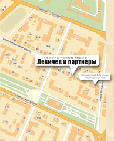

-
Адвокатское бюро "Левичев и Партнеры"
Вы зашли на сайт нашего Бюро и вполне естественно хотели бы знать кто мы и что из себя представляем? Нам уже 15 лет. При создании Бюро нас было трое партнеров. Сейчас в составе бюро шесть адвокатов. Те принципы, которые мы провозгласили 15 лет назад в партнерском договоре остались для нас незыблемыми. Для наших клиентов важно знать о следующих: 1.1. Не вредить клиенту, даже если он об этом просит. 2.2. Не обманывать клиента, даже если это может пагубно отразиться на наших гонорарах. 3.3. Никогда не обещать невыполнимого.
Мы успели сделать многое за эти годы. . Адвокатским бюро дано свыше 30 тысяч консультаций, около трети из них бесплатно. . Проведено свыше 700 уголовных дел. Более чем в 90% случаях нам удалось добиться результатов, значительно улучшающих положение наших подзащитных, по 13 из них были вынесены и вступили в законную силу оправдательные приговоры. Для понимания: по неофициальной статистике, каждый судья России выносит от 0,16 до 0,24 оправдательных приговоров в год. То есть ни одного. Лишь раз в 5-7 лет судья оглашает такой приговор. Кроме того, адвокатам бюро неоднократно удавалось добиться прекращения уголовных дел на стадии предварительного следствия/дознания по реабилитирующим основаниям (отсутствие события преступления, отсутствие состава преступления). . В судах общей юрисдикции проведено свыше 4500 гражданских дел, по более чем 10% дел нам удалось заключить мировые соглашения. Среди этих дел были довольно и неординарные: оспаривание нормативных актов органов власти и управления, составление брачных контрактов, раздел имущества супругов и близких родственников, касающееся не только имущества для личного пользования, но и бизнеса (речь идет далеко не о малом бизнесе). . В арбитражных судах за эти годы проведено более 3500 дел. Мы защищали интересы крупных промышленных предприятий и энергетических компаний, банков, страховых компаний, различных коммерческих организаций. Сумма исковых требований по экономическим спорам в сфере энергетики по нескольким делам в совокупности составила свыше 3 миллиардов рублей.
. Постоянной практикой адвокатов Бюро стало ведение налоговых споров. Свыше 85% этих дел были решены судами в пользу наших доверителей. Только за последние 2 года все 6 дел были решены судами в пользу наших доверителей.
. Трижды по нашим жалобам Высший Арбитражный Суд РФ пересматривал решения нижестоящих судов в порядке надзора. Кроме того, Верховным Судом РФ в кассационном порядке пересмотрено одно гражданское дело, по которому при повтором рассмотрении дела судом апелляционной инстанции принято судебное постановление в пользу Доверителя.
Офис Бюро расположен в Вологде, однако, география оказываемых услуг не ограничивается лишь территорией Вологодской области. Адвокаты Бюро успешно оказывали услуги своим доверителям в судах различных инстанций в Москве, Санкт-Петербурге, Архангельске, Белгороде, Екатеринбурге, Казани, Курске, Мурманске, Нижнем Новгороде Перми, Пскове, Саратове, Самаре, Сыктывкаре, Сургуте Твери, Туле, Ханты-Мансийске, Челябинске, Ярославле. Адвокаты Бюро успешно представляли интересы доверителей в спорах, рассматриваемых Международным Коммерческим Арбитражным Судом, имеют опыт сопровождения бизнеса в других государствах.
В общем, за эти годы было многое, были и трудности, но положительного в работе и профессиональных побед было значительно больше.
Поэтому, если Вы решили обратиться к нам, знайте: Вас никогда не обманут, никогда искусственно не будут усугублять Ваши проблемы, никогда не будут обещать «гор златых» и сделают так, что лучше уже не сделать.
Адвокаты Бюро осуществляют: 1. Ведение дел, подведомственных арбитражным судам. 2. Ведение уголовных дел. 3. Ведение дел, подведомственных судам общей юрисдикции. 4. Ведение дел в сфере административного производства. 5. Исполнительное производство. 6. Семейный адвокат. Юридическое сопровождение деятельности организаций – абонентская программа оказания комплексной юридической помощи организациям и индивидуальным предпринимателям на постоянной основе. Юридическое сопровождение бизнеса, как правило, осуществляется Бюро дистанционно посредством доступных средств коммуникации (телефон, e mail, факс и др.). В случае необходимости адвокатская помощь оказывается по месту нахождения Доверителя.
. письменное и устное консультирование по вопросам хозяйственной деятельности организации;
. анализ юридической документации и правовых ситуаций;
. разработка и экспертиза договорно-правовой и иной документации;
. подготовка уставов, положений об органах, филиалах юридических лиц, а также разработка внутренних нормативных актов и иной правоустанавливающей документации;
. юридическое сопровождение сделок с недвижимостью, долями, малыми средними предприятиями;
. вопросы корпоративного права: разработка и анализ документации, консультационное участие в собраниях учредителей, акционеров;
. оборот ценных бумаг: акций, облигаций, векселей;
-
. защита интеллектуальной собственности: авторские и смежные права, товарные знаки, знаки обслуживания;
. оптимизация налогообложения, защита при налоговых проверках;
. представление интересов юридических лиц в административном производстве, в арбитражных, третейских судах и судах общей юрисдикции, международных судах;
. претензионная работа, досудебное урегулирование споров, правовое сопровождение коммерческих переговоров;
. индивидуальная консультация руководителей предприятий и организаций по любым вопросам предпринимательской и управленческой деятельности.
Приведенный перечень услуг не является исчерпывающим. Если Вы не обнаружили нужной юридической услуги, свяжитесь с нами, мы постараемся Вам помочь.
Сведения, сообщенные на консультации, охраняются положением об адвокатской тайне и не подлежат разглашению третьим лицам.
Адвокат вправе вступить в дело на любой стадии процесса. Все условия ведения дела и размер гонорара адвоката оговариваются индивидуально и являются адвокатской тайной.
-
Адрес и схема проезда
 Контакты
Новости
- 01.07.2021Предложение для молодых, амбициозных, креативных, имеющих высшее или незаконченное высшее юридическое образование и мечтающих стать адвокатами >>
- 14.10.2019Адвокатское бюро «Левичев и партнеры» может подготовить для Вас и направить в суд проект судебного акта. >>
- 06.02.20183 февраля 2018 года Адвокатскому бюро "Левичев и партнеры" исполнилось 15 лет. >>